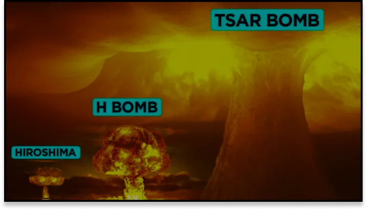

The technological threat
The greatest weapon of mass
destruction ever created.
The technological advance too much.
In Mexico on 16 July 1945, at night in the desert, the United States carried out a first experiment.
But on August 6, 1945 at 8 hours and 16 minutes, in Japan, in Hiroshima, the first atomic bomb in history explodes. The explosion sent everything in existence flying for 12 kilometres.
70,000 people were killed instantly.A heat wave and fires swept
through the city.
Tens of thousands were severely burned and died of their injuries.
Then 3 days later, on August 9 in Nagasaki.
The same thing happened
again.
Over the course of the century, many nations entered the nuclear
race.
In 1954, the Americans created the 'Castle Bravo', a bomb more powerful than its predecessors.
But the bomb was not transportable, so research continued.
In
October 1961, Russia exploded its "Tsar Bomba".
The explosion created a fireball the size of Mount
Everest.
It also emitted a shockwave that went round the world three
times.
In addition to its power of 57 megatons, it can be transported by air.
It is 3,000 times more
powerful than Hiroshima.
From 100 megatons onwards, the explosion has exhausted the earth's atmosphere. The rest of the explosion would fly off into space.
This is how the nuclear bomb became a formidable political threat.
Comparison of nuclear bombs.
The EMP, a fearsome technology.
Overvoltage burns out all electrical components.
In humans, the
probability of harm is low, but the risk still exists.
The effects will be temporary unconsciousness or death.
If an EMP
exploded over a city, the consequences would be enormous.
Hospitals would not function, nor would sewage
treatment plants.
Countries are keeping the technology secret.
An EMP has the same range as a nuclear bomb.
These bombs could one
day disable an entire country.
Johannesburg struck by
lightning.
Overvoltage, roasts all electrical components.
In humans, there is
a low probability of damage, but there is a risk.
The consequences would be temporary loss of
consciousness or death.
If an EMP were to explode over a city, the consequences would be far
reaching.
Hospitals would be out of service, water treatment plants out of service.
An inability to reach rescue workers, difficult distribution of food.
In short, cities would suddenly be deprived of life.
Countries keep this technology secret.
An EMP has the same range as
a nuclear bomb.
These bombs could one day take out an entire country.
A great physicist and theorist once said:
I don't know what the third world war will be like, but what I know for sure is that the fourth world war will be solved with sticks and flints.
Albert Einstein
This is because of the over-development of weapons of war.
Much of war is based on information.
It is the overdevelopment of weapons of war.
Most wars are information-based.
But many wars are fought with the internet and
computers.
Therefore, having an EMI can be decisive in a war.
People already have tanks, guns, and air vehicles.
And so
many other ways to fight in war.
But the development of these weapons will never stop.
But human beings yearn for power and never stop developing more powerful weapons than they already have.
Discover: the
linked article